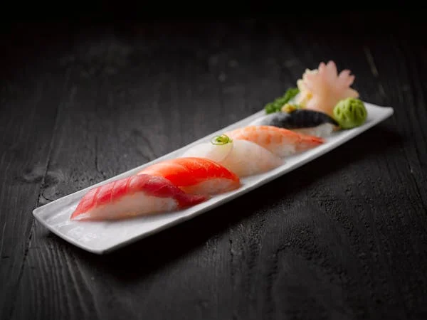

Back to Home
Sushi

Ingredients
- 2 cups sushi rice
- 2 ½ cups water
- 3 tbsp rice vinegar
- 2 tbsp sugar
- 1 tsp salt
- Nori sheets (seaweed)
- Fresh raw fish (e.g. salmon, tuna)
- Cucumber, avocado (optional)
- Soy sauce, wasabi, pickled ginger
Instructions
1. Rinse sushi rice until water runs clear. Cook in water until done.
2. Mix vinegar, sugar, and salt. Fold into the hot rice, let cool.
3. Place a nori sheet on a bamboo mat, spread rice thinly over it.
4. Add strips of fish and vegetables. Roll tightly using the mat.
5. Cut roll into bite-sized pieces using a wet knife.
6. Serve with soy sauce, wasabi, and pickled ginger.
7. Enjoy fresh for best taste and texture.